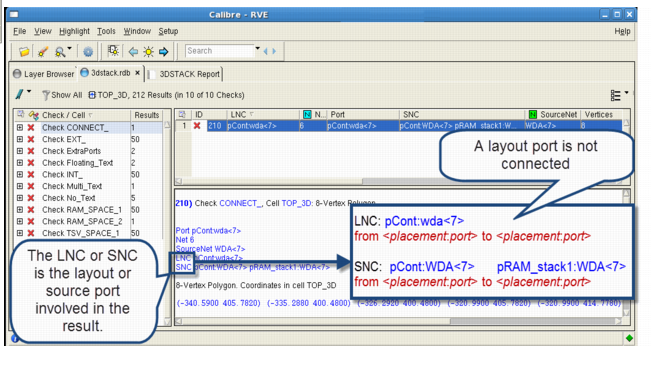

Use the advanced
debugging capability in Calibre RVE to view error results in Calibre 3DSTACK
DFM databases.
Connectivity errors are reported by the connected command in a 3DSTACK rule file.
Note: In the case where multiple
text labels overlap a pad in the layout, the tool generates a multi-text error
and chooses to use one of the text labels attached to the pad for
the connectivity analysis. Because the chosen label may not match
your design intent, it is important to review and resolve all multi-text
errors to ensure that the layout is correct. If you do not resolve
the multi-text errors, your connectivity analysis may not be correct.
Procedure
- Disable “Clear Existing Highlights”
in the Calibre RVE Highlight options dropdown menu.
This causes Calibre RVE
to keep existing highlights, and allows you to view layout net, source
net, and result highlights together
- Choose and
enable Highlight by layer.
This selection causes Calibre
RVE to highlight the different layers of an object in different
colors. See “Highlight Layout Net/Device/Pin Dialog Box” in the Calibre RVE User’s
Manual for more information on this dialog box.
- Select a connected check in
the tree view of Calibre RVE, then select a result in the detailed
view. Review the LNC (Layout Net Component) and SNC (Source Net Component)
properties in the Result Data pane; these properties report the
ports connected to the respective nets. For the MissingPads check,
see Step 6.
Display
properties aid you in debugging connectivity errors (refer to Figure 1).
In Calibre RVE, the SourceNet
property indicates the source net number of each particular result,
and the SNC property indicates the ports that the source net is connected
to in the form placement_name:port.
For
the result shown in Figure 1, net WDA<7> is connected to port
WDA<7> of placement pCont and to port WDA<7> of placement
pRAM_stack_1. Calibre RVE displays these connections as shown in
the following table.
Table 1. Source PropertiesProperty Name
|
Property Value
|
|---|
SNC
|
pCont:WDA<7>
pRAM_stack1:WDA<7>
|
SourceNet
|
WDA<7>
|
Figure 1. Layout and Source
Net Details in Calibre RVE
- Click on the layout net (Net
ID) and SourceNet links to highlight the nets in the Internal Schematic
Viewer.
You can also click on the LNC
and SNC text strings to highlight the ports on the placements involved
in the result. The layout net is also highlighted in the layout
viewer.
- Click the highlight button
( ) in the highlight toolbar
to highlight the result in the layout viewer. Since highlighted
shapes and layers may overlap, you may need to use your layout viewer
controls to set layer visibility.
The following figure shows
the result from a connected check highlighted in Calibre DESIGNrev.
The layout net is also highlighted from Step 4.
- For a MissingPads
result, the result properties include links for the missing pad
and the source net. (The MissingPads results occurs when a port
in the source netlist has no corresponding layout pad.) Do the following
to highlight the net and source port:
- Click
the “SourceNet” link in the Result Data Pane in Calibre RVE. The
net is highlighted in Calibre DESIGNrev and in the source and layout
netlist views in the Internal Schematic Viewer.
- Click
the “MissingPad” link. The port is highlighted in the source netlist.
- (Optional)
Double-click the result in the Details View to highlight it in Calibre DESIGNrev.
When the result is highlighted, there is no layout object to highlight,
so the result properties are displayed in the bottom left corner
of the top cell in the assembly.
- (Optional) Click the 3DSTACK
Report tab to view the text report.
Tip: You can right-click a
result in the detailed view for a context-sensitive highlight menu:
The available menu items depend
on the properties included with the result.
Results
You performed the following actions
while completing this procedure:
Viewed the LNC and SNC properties
in the Calibre RVE display.
Viewed the source and layout
nets in the Internal Schematic Viewer.
Highlighted the layout net in
the layout viewer.
Highlighted the result from
the connected check in the layout viewer.
All these actions provide useful information
for debugging a connectivity result in Calibre 3DSTACK results.